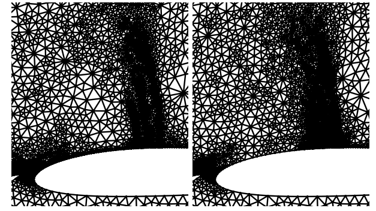
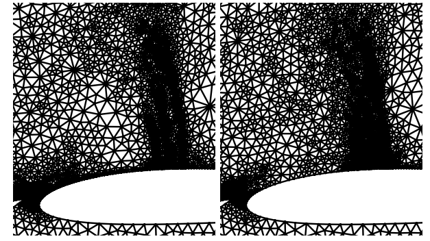

Hi, I am Shashwat Patnaik.
Aerospace Engineer.
My journey as a graduate student at the University of Michigan has exposed me to a multitude of aerospace disciplines. I have actively engaged in numerical and simulation modeling, delving into the intricacies of Computational Fluid Dynamics (CFD), Finite Element Analysis (FEA), and thermal modeling.
My interests extend to the realm of Multidisciplinary Optimization, where I've delved into optimizing aerospace systems across various disciplines. I find immense satisfaction in navigating the intricate web of challenges posed by Multi-disciplinary Optimization, a field that allows me to integrate my knowledge across different engineering domains for holistic problem-solving.
What truly captivates me is the application of theoretical knowledge to practical problem-solving. The aerospace industry, with its constant demand for innovation, provides the perfect canvas for me to explore unconventional design spaces and leverage numerical modeling to drive advancements.
Projects
Automated Body-Fitted FFD Generation
This project focused on developing and evaluating a body-fitted Free-Form Deformation (FFD) approach designed for more automated geometry parameterization in aerodynamic optimization. Standard FFD requires careful manual placement of the control point box, whereas the body-fitted method conforms the lattice to the geometry automatically. This approach was tested on a wing drag minimization problem using ADflow and IPOPT to compare its effectiveness against a standard FFD setup. Comparison with the standard FFD showed that the body-fitted method yields a slight improvement in the final drag objective while offering a significant improvement in computational time due to faster convergence.
- Python
- IPOPT
- FFD
- Optimization
Aerodynamic Shape Optimization
UAV companies must design fuselage shapes that are able to enclose odd shapes, be lightweight, and remain within regulations all while minimizing drag. The goal of this project is to propose a framework, methodology, and execution for aerodynamic shape optimization of small unmanned aerial vehicles.
- OpenMDAO
- Python
- Linux

Adjoint Based Mesh Adaptation
First-order methods such as FVM are heavily dependent on the quality of the underlying computational mesh. Adjoint-based mesh adaptation is a powerful technique for improving the accuracy and efficiency of numerical simulations. By transferring solution states between coarse and fine spaces, problematic regions within the domain are identified. Deciding which cells are to be refined depends on the targeting strategy. The lift, drag, moment and entropy adjoints were used to adapt the mesh and the targeting strategy chosen was to refine 25% of the total error. The rate of convergence varies based on which adjoint is used to drive refinement as well as the specific targeting strategy. If finely tuned, using a statistical quantity such as the mean to target cells would be the most effective. The quality of the solution has improved compared to primitive adaptation methods and uniform refinement.
- C++
- Python
- HPC
 

Optimization of Planform Area of Monoblade (6-DOF Simulation)
An element-based computational method based on Glauert's blade element momentum theory (BEMT) model was employed to estimate the geometry by maximizing the coefficient of power through MATLAB's optimization toolbox using the Sequential quadratic programming (SQP) solver. The dynamic model was developed for the single-wing design through the MATLAB Simulink 6-DOF toolbox to carry out a free-flight simulation of the wing to verify its global stability.
- MATLAB
- 6-DOF
- Simulink
- Gradient-Based Optimization
The paper published in ASME IMECE2021 Conference, titled Design Optimization of Monoblade Autorotating Pods to Exhibit an Unconventional Descent Technique Using Glauert's Modeling details all the technical and theoritacal aspect of the optmization.
Mesh Generation and Local Refinement
The objective of this project is to generate an unstructured triangular mesh for a three-element airfoil. The geometry of the airfoil can be seen in Figure. The origin of the coordinate system will be set at the leading edge of the main element, which has a unit chord, c = 1. The fairfield boundary is a square where (x,y) ∈ [-100,100]². The coarse mesh will consist of around 1500 cells, where there are smaller cells close to the airfoil and larger cells in the fairfield. Uniform refinement will be used to generate meshes with 8k, 32k, and 128k elements. Local refinement will be implemented to improve the resolution in important regions like the leading and trailing edges of the airfoil. Finally, verification will be conducted on all meshes to ensure validity and the meshes will be printed to a .gri file format.
- C++
- Python
- ICEM
CANSAT 2021-2022
The project involves designing a CanSat to carry two auto-rotating maple seed payloads. It will be launched to an altitude of 670-725 meters, deploying a parachute to descend at 15 m/s. The payloads will be released at specific altitudes, descending at less than 20m/s. Various sensors will monitor data transmitted to the CanSat container. I focused on designing the wing for auto-rotation using 6-DOF simulation. Additionally, I contributed to the outer frame design and oversaw the integration process, including developing the deployment mechanism. For more details, see the CanSat Design Review (CDR) document by clinking on the hyperlink.
- MATLAB
- 6-DOF
- Simulink
- 3D-Printing
- Deployment Mechanism (Parachutes)

Analyis of Composite Wishbone Structure (Upper-A Arm)
The suspension of a 4-wheel Formula student vehicle experiences extreme static and fluctuating forces. During cornering extreme compressive and tensile loads are induced in the wishbone structure of suspension. Currently, many formula students team uses steel and aluminum alloys for their wishbone structure which may be cheap, however, it has a low fatigue life and it is very heavy. The overall weight of a formula student car is quintessential, therefore it is essential to optimize components to reduce the weight. The analysis of the wishbone upper arm of Steel, Aluminium alloy, and Carbon fiber Epoxy (230gm) using ANSYS indicated that all the aforementioned materials are safe to use under static and fluctuating loads. Each material has its advantages and limitations. However, the strength under a compressive and fluctuating load of the wishbone made up of Carbon Fiber Epoxy was greatest among other materials. Moreover, it experiences no fatigue fracture up to a high number of loading cycles.
- ANSYS
- FEA
- Fatigue Cycle
- Composite Materials
Eulerian PDF Simulation: Homogeneous Cases and Wall-Flow Challenges
Developed and verified an Eulerian Probability Density Function (PDF) solver for turbulence, based on established models. The solver was successfully tested on standard homogeneous flows (isotropic, shear, expansion), reproducing expected trends but highlighting numerical stability limits. Attempts to extend the solver to inhomogeneous wall-bounded channel flow encountered significant divergence issues, primarily related to implementing complex wall boundary conditions and stability of the inhomogeneity terms. This work validated the solver for basic cases and identified key challenges for simulating more complex, wall-bounded turbulent flows using this Eulerian PDF approach.
- MATLAB
- Turbulence Modeling
- Eulerian PDF Methods
- Numerical Methods (PDEs)
- Regression Analysis
- Algorithm
Higher-Order Discontinuous Galerkin FVM Solver and Curved Mesh Generation
In this project, the Discontinuous Galerkin Method was used along with the implementation of curved meshes, to resolve the flow around an airfoil and a Gaussian bump. The solver had the implementation for p = 0, 1, 2, 3, in order to fulfill the convergence study. It was observed that the rate of convergences is proportional to the order of spatial approximation (p). Further, the capability for mesh adaptation was introduced, and the results after several iterations were compared with data obtained from higher order p and finer mesh.
- C++
- Python
- ICEM
Skills
- Solidworks (CSWP)
- Catia V5
- Fusion 360
- Auto-desk Inventor
- ANSYS
- Simulink
- STAR-CCM+
- OpenFOAM
- DAFoam
- ADFlow
- C++
- Python
- MATLAB